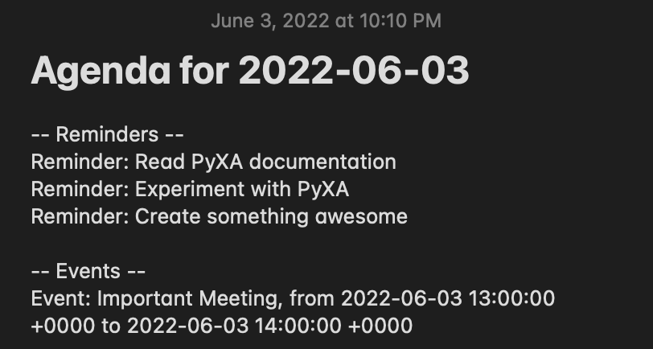

Python for Automation, or PyXA for short, is a wrapper around several macOS frameworks that enables AppleScript- and JXA-like control over macOS applications from within Python. PyXA's objects and methods are based on applications' scripting dictionaries and coupled with additional automation features supported by Apple's macOS APIs.
PyXA was created with the goals of:
PyXA fills a gap where currently available frameworks ultimately fall short: it aims to be easy to learn for users accustomed to Python (or users who must use Python). To that end, the package's documentation contains numerous examples of how to use just about every method, and additional examples are provided covering specific use cases. PyXA's code also serves as a source of examples for how to use PyObjC to interact with various macOS frameworks.
PyXA is not intended to replace AppleScript or even to cover 100% of AppleScript's capabilities. Instead, PyXA is meant to provide general convenience in accomplishing AppleScript and other automation tasks via Python, for the most commonly used applications. If you need a complete Apple Event bridge, or if you find that PyXA cannot handle your particular use case, consider using appscript or one of its derivatives. If you just need something that works in most circumstances, that has abundant examples for you to reference, and supports some additional automation features (such as opening Maps to a specific address), then PyXA might be a good fit for you.
PyXA.application("Maps").front_window.collapse())PyXA.application("Reminders").lists()[0].reminders().title())note.name, tab.URL, or track.artist)PyXA can control Safari and interact with its content. In this example, we use PyXA to obtain a reference to the Safari application, open a specific URL, then bring up the print dialog for the loaded page. If we wanted, we could pass additional parameters to the print() method to skip the print dialog and immediately print the page without any user interaction.
import PyXA
from time import sleep
safari = PyXA.Safari()
safari.open("https://www.apple.com")
sleep(1)
safari.current_document.print()
PyXA can also be used to interact with the Music app. In this example, we use PyXA to get a reference to the Music app, begin playback of the next-up song, then repeatedly print out some information about the track whenever the current track changes. The information will be printed regardless of how the track changes, so you can test this script by running it and skipping to the next song.
import PyXA
from time import sleep
music = PyXA.Application("Music")
# Wait for Music.app to be ready to play
music.activate()
while not music.frontmost:
sleep(0.5)
music.play()
track_name = ""
while True:
if music.current_track.name != track_name:
track_name = music.current_track.name
print(music.current_track.name)
print(music.current_track.album)
print(music.current_track.artist, "\n")
When run, this script produces an output similar to the following:
Die Hard
Mr. Morale & The Big Steppers
Kendrick Lamar, Blxst & Amanda Reifer
I Like You (A Happier Song) [feat. Doja Cat]
Twelve Carat Toothache
Post Malone
WAIT FOR U (feat. Drake & Tems)
I NEVER LIKED YOU
Future
...
PyXA can also be used for more complex tasks. In this example, we use PyXA to get a summary of upcoming reminders and events for the day. We obtain references to the Notes, Calendars, and Reminders applications, then we iterate through our reminders and events, creating a new line of text to summarize each item due today. We apply some HTML formatting to the note to make it look nice, then we create a new note containing the summarized content.
import PyXA
from datetime import datetime, timedelta
# Activate Reminders to speed up communication of Apple Events
reminders = PyXA.Application("Reminders").activate()
notes = PyXA.Application("Notes")
calendar = PyXA.Application("Calendar")
# Get names of incomplete Reminders using a bulk method
names = reminders.reminders({ "completed": False }).name()
# Create a string listing incomplete reminders
note_text = "-- Reminders --"
for name in names:
note_text += f"<br />Reminder: {name}"
# Get Calendar events starting within the next 2 days
start = datetime.now()
events = calendar.calendars().events().between("startDate", start, start + timedelta(days=2))
# Get event summaries (titles), start dates, and end dates using bulk methods
summaries = events.summary()
start_dates = events.start_date()
end_dates = events.end_date()
# Append the list of event information to the note text
note_text += "<br/><br />-- Events --"
for index, summary in enumerate(summaries):
note_text += "<br />Event: " + summary + ", from " + str(start_dates[index]) + " to " + str(end_dates[index])
# Create and show the note
note = notes.new_note(f"<h1>Agenda for {start.strftime('%Y-%m-%d')}</h1>", note_text)
note.show()
When run, the above script creates a note in the Notes application similar to the following:
Lastly, PyXA has several convenient features for working with lists, interacting with the clipboard, and more soon to come. The example below highlights the simplicity of filtering lists of scriptable objects and setting the content of the clipboard. The filter method of PyXA's :class:XABase.XAList class enables straightforward construction of predicates to efficiently filter lists by. The content property of the :class:XABase.XAClipboard class can be set to both literal values and PyXA objects, allowing for concise scripts like the one below.
import PyXA
app = PyXA.Application("Messages")
last_file_transfer = app.file_transfers().filter("direction", "==", app.MessageDirection.OUTGOING)[-1]
PyXA.XAClipboard().content = last_file_transfer
To install the latest version of PyXA on macOS, use the following pip command:
python -m pip install mac-pyxa
The best way to learn about PyXA is to read the documentation. From there, you can find tutorials, examples, in-depth class and method documentation, and additional resources.
For further help, consider joining the PyXA Discord Server and asking your questions there.
Limitations of specific applications and methods are noted in their respective reference documents.
Contributions are welcome, big or small. Please refer to the Contributing Guidelines for any contributions larger than a spelling correction. For small fixes such as spelling corrections, no issue needs to be created; you can go right to making a pull request. Other small issues include general grammar fixes, short comment additions, and formatting (whitespace) changes.
If you have any questions about PyXA that are not addressed in the documentation, or if you just want to talk, feel free to email stephen.kaplan@maine.edu.